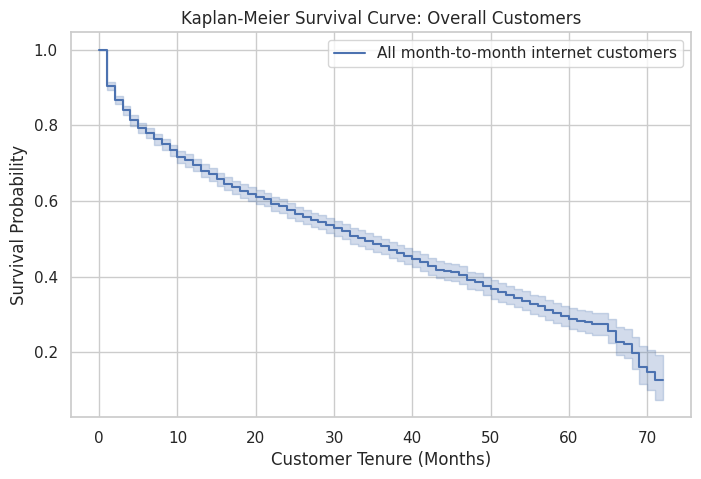
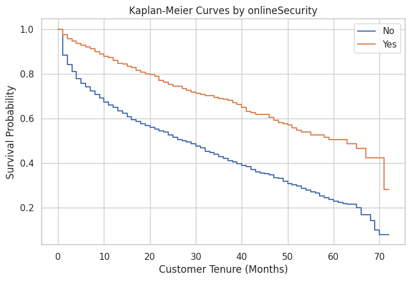
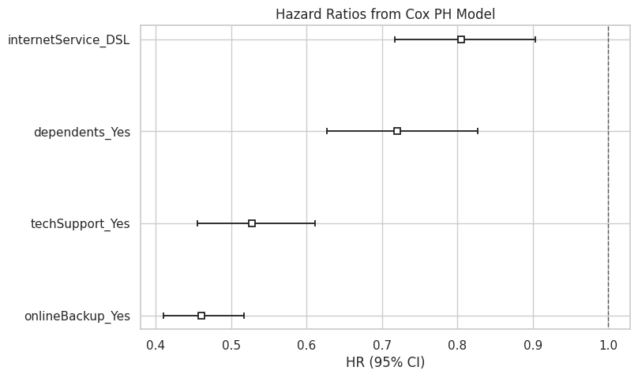
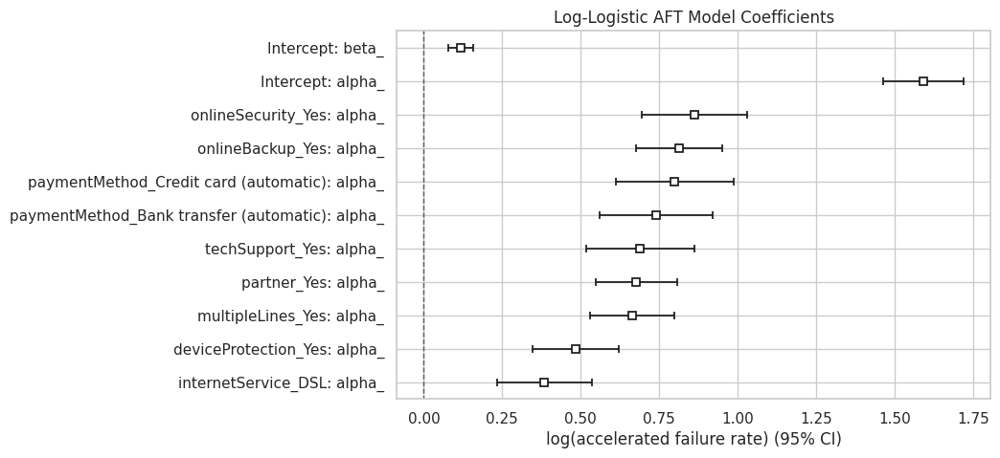
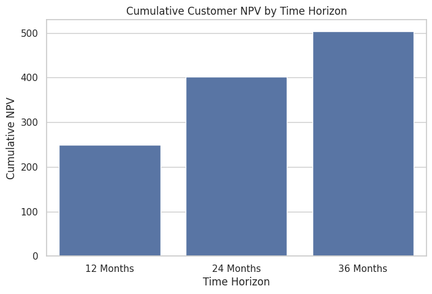
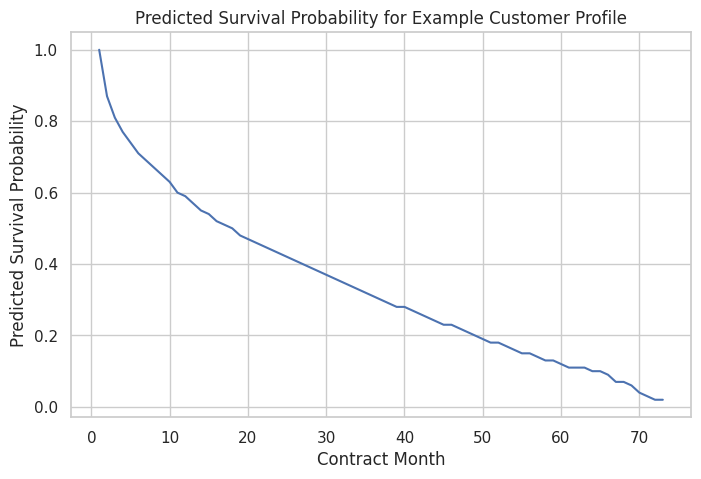

1. 数据准备与研究对象
原始数据来自 IBM Telco Customer Churn，共包含 7043 条客户记录。分析中将
tenure 定义为客户留存月份，将 churn=1 定义为客户流失事件。
未流失客户被视为右删失样本，即只知道这些客户至少已经留存到当前月份。
为了让事件发生更充分，建模对象限定为月付合约且订阅互联网服务的客户。 筛选后共有 3351 条记录，其中未流失客户 1795 人、已流失客户 1556 人。 已流失客户平均留存时间为 14.60 个月，低于未流失客户的 23.62 个月； 已流失客户平均月费为 76.38，高于未流失客户的 71.17，说明高月费客户可能更容易提前流失。
silver_df = (
bronze_df
.withColumn("churn", when(col("churnString") == "Yes", 1.0).otherwise(0.0))
.drop("churnString")
.filter(col("contract") == "Month-to-month")
.filter(col("internetService") != "No")
.filter(col("tenure").isNotNull() & col("churn").isNotNull())
)| 指标 | 结果 |
|---|---|
| 原始数据行数 | 7043 |
| 筛选后数据行数 | 3351 |
| 未流失客户数 | 1795 |
| 已流失客户数 | 1556 |
| 流失事件比例 | 46.43% |
| 总体中位生存时间 | 34.0 月 |
| 状态 | 客户数 | 平均留存月份 | 留存中位数 | 平均月费 |
|---|---|---|---|---|
| 未流失 | 1795 | 23.62 | 19.0 | 71.17 |
| 已流失 | 1556 | 14.60 | 8.0 | 76.38 |
2. Kaplan-Meier 曲线与 Log-rank 检验
Kaplan-Meier 方法用于估计客户在不同月份仍未流失的概率。总体曲线显示，该客户群体的 中位生存时间约为 34 个月，也就是累计生存概率下降到 50% 左右的位置约在第 34 个月。

在分组分析中，不同变量的生存曲线分离程度代表其与流失时间的关联强弱。
性别分组曲线较接近，预测价值有限；而 onlineSecurity、
internetService、techSupport、onlineBackup
等服务相关变量的 Log-rank 检验 p 值较低，说明这些分组之间的生存曲线差异显著。

| 字段 | 最小两两 p 值 |
|---|---|
| onlineBackup | 4.123e-43 |
| onlineSecurity | 1.188e-32 |
| partner | 2.253e-31 |
| paymentMethod | 1.304e-21 |
| techSupport | 1.916e-21 |
| multipleLines | 1.795e-17 |
| deviceProtection | 2.777e-17 |
| dependents | 3.245e-09 |
| internetService | 5.241e-07 |
| streamingMovies | 2.278e-05 |
3. Cox Proportional Hazards 多变量模型
Kaplan-Meier 更适合单变量或少量分组的直观比较。为了同时控制多个变量，进一步使用
Cox Proportional Hazards 模型。模型输入包括 dependents_Yes、
internetService_DSL、onlineBackup_Yes 和
techSupport_Yes 等 one-hot 后的变量。
cox_survival_pd = cox_encoded_pd[
["churn", "tenure", "dependents_Yes",
"internetService_DSL", "onlineBackup_Yes", "techSupport_Yes"]
].copy()
cph = CoxPHFitter(alpha=0.05)
cph.fit(cox_survival_pd, duration_col="tenure", event_col="churn")
Cox 模型的核心输出是风险比 exp(coef)。风险比小于 1 表示相对于基准组，
客户流失风险更低、留存更久。结果显示，DSL、在线备份和技术支持等变量对流失风险有明显影响，
服务类型和增值服务状态是预测客户留存的重要特征。
| 变量 | coef | exp(coef) | p | 95% 下界 | 95% 上界 |
|---|---|---|---|---|---|
| dependents_Yes | -0.3287 | 0.7199 | 0.0000 | 0.6265 | 0.8272 |
| internetService_DSL | -0.2173 | 0.8047 | 0.0002 | 0.7167 | 0.9034 |
| onlineBackup_Yes | -0.7766 | 0.4600 | 0.0000 | 0.4096 | 0.5165 |
| techSupport_Yes | -0.6392 | 0.5277 | 0.0000 | 0.4553 | 0.6117 |

比例风险假设检查提示 internetService_DSL、onlineBackup_Yes
和 techSupport_Yes 可能存在时间变化效应。如果目标是严格解释，应考虑分层 Cox
或时间交互项；如果目标主要是预测，则需要结合预测误差和业务解释性继续评估模型。
4. Accelerated Failure Time 参数模型
为了对比 Cox PH，还使用 Log-Logistic Accelerated Failure Time 模型。AFT 是参数模型， 需要假设生存时间服从某种分布。AFT 系数更接近“时间尺度”的解释：某个变量可能延长或缩短客户到流失事件发生之前的时间。
本次 Log-Logistic AFT 模型估计的中位生存时间约为 4.91 个月。由于分布假设较强， 结果应作为参数化基线进行比较，而不是单独作为最终解释。

| 变量 | coef | exp(coef) | p |
|---|---|---|---|
| onlineSecurity_Yes | 0.8616 | 2.3669 | 0.0 |
| onlineBackup_Yes | 0.8128 | 2.2542 | 0.0 |
| techSupport_Yes | 0.6893 | 1.9923 | 0.0 |
| internetService_DSL | 0.3837 | 1.4678 | 0.0 |
| Intercept | 1.5911 | 4.9090 | 0.0 |
5. 客户生命周期价值 CLV 计算
最后，将 Cox 模型预测出的生存概率用于客户生命周期价值计算。核心思路是： 先预测某个客户画像在未来各月份仍未流失的概率，再用“生存概率 × 月利润”得到每月期望利润， 最后用月折现率计算净现值和累计净现值。
monthly_discount_rate = annual_irr / 12
expected_profit = survival_probability * monthly_profit
monthly_npv = expected_profit / ((1 + monthly_discount_rate) ** contract_month)
cumulative_npv = monthly_npv.cumsum()示例画像假设每月利润为 30、年折现率为 10%。12、24、36 个月的累计 NPV 可用于估算获客成本上限： 如果获客成本超过某一周期下的累计 NPV，则从该周期看客户可能无法带来正回报。
| 月份 | 生存概率 | 期望月利润 | 月 NPV | 累计 NPV |
|---|---|---|---|---|
| 1 | 1.00 | 30.00 | 29.75 | 29.75 |
| 2 | 0.87 | 25.98 | 25.55 | 55.30 |
| 3 | 0.81 | 24.41 | 23.81 | 79.11 |
| 4 | 0.77 | 23.20 | 22.44 | 101.55 |
| 5 | 0.74 | 22.10 | 21.20 | 122.76 |
| 6 | 0.71 | 21.26 | 20.23 | 142.99 |
| 7 | 0.69 | 20.70 | 19.53 | 162.52 |
| 8 | 0.67 | 20.02 | 18.73 | 181.25 |
| 9 | 0.65 | 19.44 | 18.04 | 199.29 |
| 10 | 0.63 | 18.79 | 17.30 | 216.59 |
| 11 | 0.60 | 18.10 | 16.52 | 233.12 |
| 12 | 0.59 | 17.70 | 16.02 | 249.14 |


6. 综合结论
第一，生存分析比简单的“是否流失”分类更进一步，因为它显式建模了“什么时候流失”。
tenure 和 churn 构成了生存分析的两个核心字段，使我们能够估计客户在不同月份继续留存的概率。
第二，Kaplan-Meier 和 Log-rank 检验表明，不同服务配置的客户留存曲线差异明显。 与性别这类人口统计变量相比，互联网服务类型、在线安全、在线备份和技术支持等业务变量更能解释客户留存差异。
第三，Cox PH 和 AFT 模型从多变量角度进一步量化了这些因素的影响。Cox 模型便于解释风险比， 但需要检查比例风险假设；AFT 模型提供了参数化对照，但依赖分布假设。
第四，将生存概率用于 CLV 计算可以把统计模型输出转化为业务指标。 模型不只回答“客户是否会流失”，还可以帮助估计某类客户未来每月的期望价值， 从而支持获客预算、客户保留策略和增值服务设计。